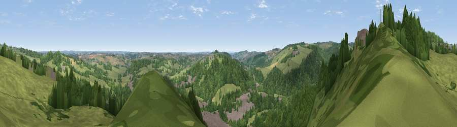

Viewpoint near Fritchley
#24490 in England · top 32% of its area beats it · near Fritchley · path 89 mWhere it is
The exact computed spot (SK 35275 52375). Click the marker for map links.
Public access: the nearest public right of way is about 89 m away — the final stretch may cross private land. Computed from Natural England's CRoW access layer and OpenStreetMap rights of way — not the legal definitive map. Always verify locally.
The view, rendered

A 360° render of this exact spot computed from the terrain model, tree cover and land cover — summer colours, afternoon light, calibrated against photographs of famous viewpoints. Real trees, hedges and buildings will differ in detail.
The panorama
Grey silhouette: terrain skyline in each direction (720 bearings, Earth curvature and refraction included). Dashed green: skyline with trees (+15 m) and buildings (+8 m) as obstacles. Blue strip: how far the ground is visible on each bearing.
Where the view opens
Wedge length = distance to the farthest visible ground on that bearing (vegetation-aware). Rings at 10, 25 and 50 km.
What fills the view
57% woodland · 31% grassland · 11% built-up · 1% cropland
Angular shares of the visible panorama (visual magnitude), not map area. Landscape diversity 0.43 (0–1 Shannon).
Key numbers
More beautiful places nearby
The staircase of upgrades: each row has a higher view potential than everything closer. Driving times are estimates from straight-line distance, calibrated against real road routing — check an actual route before setting out.
| Place | Direction | Drive | Score |
|---|---|---|---|
| The Tors | NNW · 1 km | ~4 min | 68.9 |
| Crich Stand | NNW · 3 km | ~7 min | 73.0 |
| Alport Height | W · 5 km | ~11 min | 73.9 |
| Tissington Hill | W · 20 km | ~34 min | 75.5 |
| Viewpoint near Stanton under Bardon | SSE · 41 km | ~60 min | 76.0 |
| Viewpoint near Woodhouse Eaves | SSE · 41 km | ~60 min | 77.7 |
| Viewpoint near Mow Cop | W · 49 km | ~70 min | 78.9 |
| Viewpoint near Mow Cop | W · 50 km | ~71 min | 80.2 |
53.06746, -1.47502 · source: screening · position refined by local search. Computed location — check access rights before visiting.